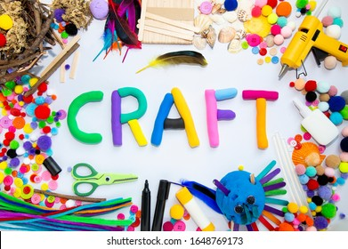

Crafts describes a wide variety of activities involving making things with one's own hands. Arts and crafts is usually a hobby. Some crafts (art skills) have been practised since preshistoric times, others are more recent inventions. William Morris, John Ruskin and others promoted an "arts and crafts" movement in the late 19th century, which popularized the phrase. Both children and adults enjoy arts and crafts. Children in schools may learn skills such as woodworking, wood carving, sewing, or making things with all sorts of material. Many community centres and schools have evening or day classes and workshops where one can learn arts and craft skills.
HERE ARE SOME LINKS TO GO.
👇
PAPER HOUSE
CRAFT FROM CLAY
SOME DIY CRAFT FOR KID
BEAUTIFUL GREETING CARDS
SCHOOL CRAFT IDEAS
WASTE MATERIAL CRAFT
DIY GARDENING TRICKS
QUICK AND EASY CRAFT
EPOXY RESIN CRAFT
CRAFT IDEAS FOR ROOM DECOR!!